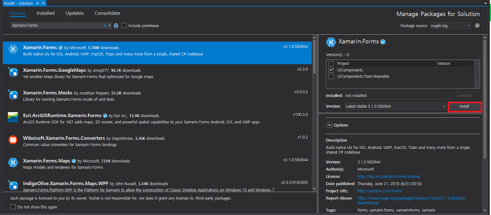
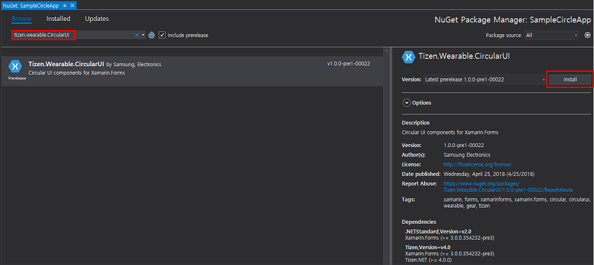
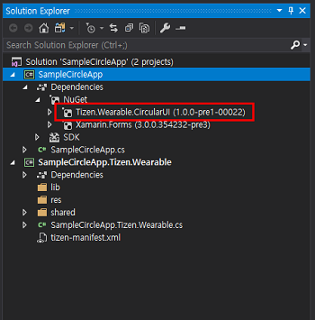

Tizen XAML App Template
1) Create project
Select 'Tizen XAML App' template on 'New project'.

Select only wearable device at Tizen project wizard.

Search Xamarin.Forms NuGet package and install latest version (supports version 3.1.0.583944 and higher) via NuGet package manager. Package source is Nuget.org.

Search Tizen.Wearable.CircularUI NuGet package and install latest version via NuGet package manager. Package source is Nuget.org.

Install Tizen.Wearable.CircularUI NuGet at portable class library (PCL) project.

2) Insert CircularUI control code
Remove SampleCircleApp.cs that is generated automatically at PCL.
Add App.xaml and App.xaml.cs using add item.
In App.xaml file, remove all of the template code and replace it with the following code. This code defines the user interface for the page:
xmlns:w=clr-namespace:Tizen.Wearable.CircularUI.Forms:wprefix meansTizen.Wearable.CircularUI.Formsnamespace.<w:CirclePage>:CirclePagederive fromXamarin.Forms.Page. This Page content area hasLabelandButton.<w:CirclePage.CircleSurfaceItems>:CircleSliderSurfaceItemattached forCircleSurfaceItemofCirclePage.RotaryFocusObjectis set reference of theslider.CircleSliderSurfaceItemhas rotary focus.CircleSliderSurfaceItemcan receive a Rotary Event from the wearable device's bezel interaction.For more information, see CirclePage guide.
App.xaml file
<?xml version="1.0" encoding="utf-8" ?>
<Application
x:Class="SampleCircleApp.App"
xmlns="http://xamarin.com/schemas/2014/forms"
xmlns:x="http://schemas.microsoft.com/winfx/2009/xaml"
xmlns:local="clr-namespace:SimpleCircleApp"
xmlns:w="clr-namespace:Tizen.Wearable.CircularUI.Forms;assembly=Tizen.Wearable.CircularUI.Forms">
<Application.MainPage>
<NavigationPage x:Name="MainNavigation">
<x:Arguments>
<w:CirclePage
x:Name="page"
NavigationPage.HasNavigationBar="False"
RotaryFocusObject="{x:Reference slider}">
<w:CirclePage.Content>
<StackLayout
HorizontalOptions="Center"
Orientation="Vertical"
VerticalOptions="Center">
<Label HorizontalTextAlignment="Center" Text="Welcome to Xamarin Forms!" />
<Button Clicked="OnButtonClicked" Text="show toast" />
</StackLayout>
</w:CirclePage.Content>
<w:CirclePage.CircleSurfaceItems>
<w:CircleSliderSurfaceItem
x:Name="slider"
Increment="0.5"
IsVisible="True"
Maximum="15"
Minimum="0"
Value="3" />
</w:CirclePage.CircleSurfaceItems>
</w:CirclePage>
</x:Arguments>
</NavigationPage>
</Application.MainPage>
</Application>
- In App.xaml.cs, remove all of the template code and replace it with the following code:
OnButtonClickedis an event handler ofButtonClickedevent. The following code simply displays Toast popup during three seconds:
App.xaml.cs file
using Tizen.Wearable.CircularUI.Forms;
using System;
using Xamarin.Forms;
using Xamarin.Forms.Xaml;
namespace SampleCircleApp
{
[XamlCompilation(XamlCompilationOptions.Compile)]
public partial class App : Application
{
public App()
{
InitializeComponent();
}
public void OnButtonClicked(object sender, EventArgs e)
{
Toast.DisplayText("Toast popup", 3000);
}
}
}
- For initializing CircularUI instance, insert
FormsCircularUI.Init()code in the Main method inSampleCircleApp.Tizen.Wearable.cs. You must importTizen.Wearable.CircularUI.Forms.Rendererwithusingdirectives.
SampleCircleApp.Tizen.Wearable.cs file
using Tizen.Wearable.CircularUI.Forms.Renderer;
static void Main(string[] args)
{
var app = new Program();
global::Xamarin.Forms.Platform.Tizen.Forms.Init(app);
FormsCircularUI.Init(); //must insert this initialize code
app.Run(args);
}
2. Build and launch your application.
Build the solution
- In the Visual Studio menu, select Build > Build Solution.
- In the Solution Explorer view, right-click the solution name and select Build.
Launch Tizen Emulator
Click
Launch Tizen Emulatorbutton, as displayed in the following image:

For Windows OS, copy the application tpk file from the project binary path to sdb tool path.
SampleCircleApptpk: The file is located inProjectPath\SampleCircleApp.Tizen.Wearable\bin\Debug\tizen40\org.tizen.example.SampleCircleApp.Tizen.Wearable-1.0.0.tpk.- Project path: To locate the project path, in the Solution Explorer view, right-click the solution name and click
open folder in file explorer. - sdb tool: This is located in
c:\tizen\tools\sdb.exe
For Windows OS, launch Tizen Sdb Command Prompt (Tool > Tizen > Tizen Sdb Command Prompt). For Linux, you can use sdb command directly in your project path.
Install your app with sdb command
sdb install org.tizen.example.SampleCircleApp.Tizen.Wearable-1.0.0.tpkLaunch wearable emulator to verify the application